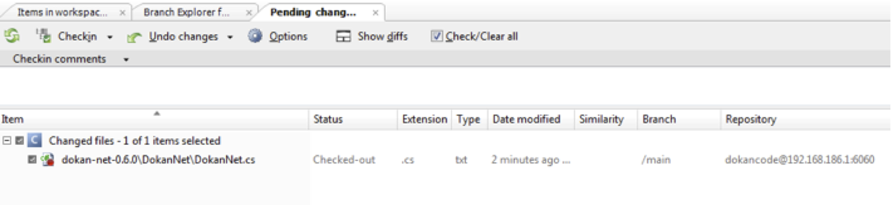
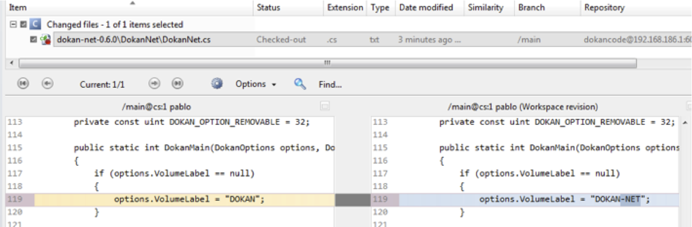

Let’s go to pending changes and check what we have modified so far:

Figure 1: Plastic SCM "Pending Changes" view
As you can see, the pending changes view lists the file you previously checked out. If you click on the “show diffs” button you’ll see the line you’ve modified:

Figure 2: Plastic SCM "Diff" view
You can inspect the difference prior to checkin. The same will apply when you’re modifying more than one file.